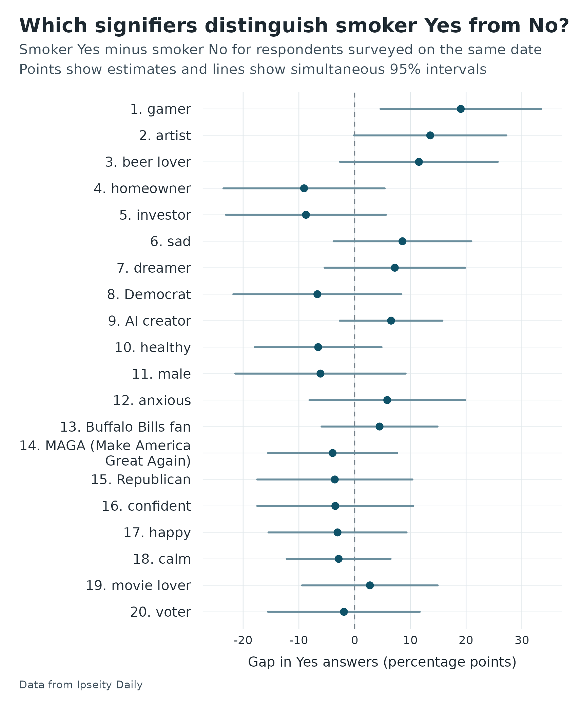

A daily study of the self
Which signifiers best distinguish smoker Yes from No?

Which words best distinguish people who say smoker describes them today from people who answer No? In Ipseity Daily, the widest gap was for gamer. On a common mix of survey dates, 63.9% of the smoker Yes group said gamer fit them, compared with 44.8% of the smoker No group. The estimated gap was 19.0 percentage points, with an interval from 4.6 to 33.5 points after allowing for the full set of comparisons. Plenty of people in both groups called themselves gamers.
How to read the ranking
The snapshot contains 797,977 signifier answers from 5,485 respondents across 10,218 respondent-days through November 22, 2026. A respondent-day is one person's survey on one date. The smoker item was answered on 1,479 respondent-days by 1,212 people, with 245 Yes answers and 1,234 No answers.
For each label, I used surveys that contained an answer to both that label and smoker. I compared the groups on dates when both smoker Yes and smoker No respondents had answered the label. Dates with more answers and better balance between the groups counted more. Each group needed at least 50 answered respondent-days and 20 distinct people. Of the 32 signifiers that qualified, the chart shows the 20 with the largest estimated gaps in either direction. Together they represent 12,756 answers from 596 people across 666 respondent-days.
Dots to the right of zero mark labels that were more common in the smoker Yes group. Dots to the left mark labels that were more common in the smoker No group. The 95% intervals account for people who took the survey more than once and for examining all the eligible labels. Only the interval for gamer excludes zero. The order reflects the observed gaps, and the wide intervals leave room for a different ordering in another sample.
What people do for fun and how they describe it
Calling yourself a gamer can mean that gaming is part of your social life or how you spend your free time. People who play just as often can differ in how readily they adopt the label. The gap could reflect differences in age, social circles, or what the word means to the people in each group.
Artist and beer lover had the next largest gaps, at 13.6 and 11.5 points toward smoker Yes. AI creator, Buffalo Bills fan, and movie lover leaned the same way. These labels span creative work, tastes, and belonging to a fan community. A Yes to beer lover leaves the frequency and amount of drinking open, just as gamer leaves time spent playing open. The uncertainty around most of the leisure labels makes any shared lifestyle interpretation tentative.
Resources, feelings, and politics
Homeowner and investor had the largest gaps toward smoker No, at 9.1 and 8.7 points. Both labels can reflect resources and stage of life. Buying a home can take years of saving, and people differ in whether they identify as an investor when they hold a retirement account. A group with more people at a stage when those labels feel applicable could show both gaps, even on the same survey dates. The estimate for male also leaned toward smoker No, another reason to consider who made up the groups.
Sad and anxious leaned toward smoker Yes, while healthy, confident, happy, and calm leaned toward smoker No. Several of these words can describe parts of the same experience, so the estimates could reflect overlapping impressions of how people felt that day. Dreamer leaned toward smoker Yes as well, bringing an aspirational label into a set that also includes feelings. Each comparison leaves open how often these words fit the same people or how a person's answers might change over time.
The gaps for Democrat, Republican, MAGA (Make America Great Again), and voter all leaned toward smoker No. The fact that the party labels leaned in the same direction gives little support to a left-right interpretation. Saying voter fits may also express how central political participation feels to a person.
These are associations within the surveyed sample of American adults. The mix of questions varied, and many labels shared too few surveys with smoker to be ranked. Comparing people surveyed on the same date still leaves room for differences in age and other characteristics. The wording also leaves room for how respondents define smoking. For someone who smokes occasionally or has recently quit, a Yes can depend on whether smoker feels like part of who they are. The ranking describes how that choice went together with the other words people chose that day.
Read the complete R analysis
#!/usr/bin/env Rscript
library(tidyverse)
data_path <- Sys.getenv("IPSEITY_DATA_PATH", "data/ipseity.csv.gz")
expected_columns <- c(
"endorsed", "signifier", "observation_date", "hashed_respondent_id",
"demographics_status", "age", "sex", "ethnicity", "birth_country",
"residence_country", "nationality", "language", "student", "employment",
"time_on_task", "approvals"
)
expected_rows <- 797977L
expected_end <- as.Date("2026-11-22")
minimum_days_per_group <- 50L
minimum_people_per_group <- 20L
display_count <- 20L
confidence_level <- 0.95
header <- names(read_csv(data_path, n_max = 0, show_col_types = FALSE,
progress = FALSE))
if (!identical(header, expected_columns)) {
stop("The input columns differ from the canonical schema.")
}
answers <- read_csv(
data_path,
col_types = cols_only(
endorsed = col_integer(),
signifier = col_character(),
observation_date = col_date(format = "%Y-%m-%d"),
hashed_respondent_id = col_character()
),
trim_ws = FALSE,
num_threads = 1,
progress = FALSE
)
if (nrow(problems(answers)) > 0 || anyNA(answers) ||
any(!answers$endorsed %in% c(0L, 1L)) ||
any(!str_detect(answers$hashed_respondent_id, "^[0-9a-f]{12}$")) ||
any(!nzchar(str_trim(answers$signifier)))) {
stop("The input contains an invalid answer, date, signifier, or respondent key.")
}
if (nrow(answers) != expected_rows ||
max(answers$observation_date) != expected_end) {
stop("The input size or last observation date differs from the authorized snapshot.")
}
if (anyDuplicated(select(answers, hashed_respondent_id, observation_date, signifier))) {
stop("The input contains a duplicate respondent-date-signifier key.")
}
smoker_answers <- answers |>
filter(signifier == "smoker") |>
transmute(hashed_respondent_id, observation_date, smoker = endorsed)
# One paired answer per signifier and respondent-day. Missing answers
# contribute nothing, and smoker status can vary between days for a person.
all_pairs <- answers |>
filter(signifier != "smoker") |>
inner_join(smoker_answers, by = c("hashed_respondent_id", "observation_date"))
comparable_pairs <- all_pairs |>
group_by(signifier, observation_date) |>
filter(any(smoker == 1L), any(smoker == 0L)) |>
ungroup()
support <- comparable_pairs |>
group_by(signifier) |>
summarise(
dates = n_distinct(observation_date),
yes_days = sum(smoker == 1L),
no_days = sum(smoker == 0L),
yes_people = n_distinct(hashed_respondent_id[smoker == 1L]),
no_people = n_distinct(hashed_respondent_id[smoker == 0L]),
people = n_distinct(hashed_respondent_id),
.groups = "drop"
) |>
filter(yes_days >= minimum_days_per_group,
no_days >= minimum_days_per_group,
yes_people >= minimum_people_per_group,
no_people >= minimum_people_per_group)
if (nrow(support) < display_count) {
stop("Too few signifiers meet the comparison support requirements.")
}
if (any(str_detect(support$signifier, "[[:cntrl:]@]|https?://|(?i)\\b[0-9a-f]{12}\\b"))) {
stop("A signifier label failed the publication privacy check.")
}
# Average same-date gaps, weighting each date by n_yes * n_no / n_total.
# This gives more weight to dates with larger, better-balanced samples.
# The resulting gap is the coefficient of smoker in a linear probability
# model with date fixed effects. Use its respondent-clustered CR1 variance
# so that all visits from a person contribute one joint score.
fit_signifier <- function(pairs) {
day_rates <- pairs |>
group_by(observation_date) |>
summarise(
yes_rate = mean(endorsed[smoker == 1L]),
no_rate = mean(endorsed[smoker == 0L]),
weight = sum(smoker == 1L) * sum(smoker == 0L) / n(),
.groups = "drop"
)
yes_rate <- weighted.mean(day_rates$yes_rate, day_rates$weight)
no_rate <- weighted.mean(day_rates$no_rate, day_rates$weight)
gap <- yes_rate - no_rate
centered <- pairs |>
group_by(observation_date) |>
mutate(
centered_smoker = smoker - mean(smoker),
residual = endorsed - mean(endorsed) - gap * centered_smoker
) |>
ungroup()
cluster_scores <- centered |>
group_by(hashed_respondent_id) |>
summarise(score = sum(centered_smoker * residual), .groups = "drop")
observations <- nrow(centered)
parameters <- nrow(day_rates) + 1L
clusters <- nrow(cluster_scores)
correction <- (clusters / (clusters - 1)) *
((observations - 1) / (observations - parameters))
standard_error <- sqrt(correction * sum(cluster_scores$score^2)) /
sum(centered$centered_smoker^2)
tibble(yes_rate, no_rate, gap, standard_error)
}
eligible_pairs <- semi_join(comparable_pairs, support, by = "signifier")
estimates <- eligible_pairs |>
group_by(signifier) |>
group_modify(~ fit_signifier(.x)) |>
ungroup() |>
inner_join(support, by = "signifier") |>
mutate(
critical_value = qt(1 - (1 - confidence_level) / (2 * nrow(support)),
df = people - 1),
lower = gap - critical_value * standard_error,
upper = gap + critical_value * standard_error
) |>
arrange(desc(abs(gap)), signifier) |>
mutate(rank = row_number())
if (any(!is.finite(estimates$standard_error)) ||
any(estimates$standard_error <= 0)) {
stop("A ranked estimate has an unusable standard error.")
}
leaders <- slice_head(estimates, n = display_count)
leader_pairs <- semi_join(eligible_pairs, leaders, by = "signifier")
top_yes <- filter(leader_pairs, smoker == 1L)
top_no <- filter(leader_pairs, smoker == 0L)
results <- c(
"Snapshot",
sprintf("Observation dates: %s through %s",
min(answers$observation_date), max(answers$observation_date)),
sprintf("Response observations: %d", nrow(answers)),
sprintf("Respondent-days: %d",
n_distinct(answers$hashed_respondent_id, answers$observation_date)),
sprintf("Unique respondents: %d", n_distinct(answers$hashed_respondent_id)),
sprintf("Distinct signifiers including smoker: %d", n_distinct(answers$signifier)),
"",
"Smoker answers",
sprintf("Response observations and respondent-days: %d", nrow(smoker_answers)),
sprintf("Unique respondents: %d", n_distinct(smoker_answers$hashed_respondent_id)),
sprintf("Yes respondent-days: %d and unique respondents: %d",
sum(smoker_answers$smoker == 1L),
n_distinct(smoker_answers$hashed_respondent_id[smoker_answers$smoker == 1L])),
sprintf("No respondent-days: %d and unique respondents: %d",
sum(smoker_answers$smoker == 0L),
n_distinct(smoker_answers$hashed_respondent_id[smoker_answers$smoker == 0L])),
"",
"Same-day comparisons",
sprintf("Other signifiers with any same-respondent, same-day pairing: %d",
n_distinct(all_pairs$signifier)),
sprintf("Minimum respondent-days and distinct respondents per smoker group: %d and %d",
minimum_days_per_group, minimum_people_per_group),
sprintf("Eligible signifiers: %d", nrow(support)),
sprintf("Ranked signifiers displayed: %d", nrow(leaders)),
sprintf("Top signifier response observations: %d", nrow(leader_pairs)),
sprintf("Top signifier respondent-days: %d",
n_distinct(leader_pairs$hashed_respondent_id, leader_pairs$observation_date)),
sprintf("Top signifier unique respondents: %d",
n_distinct(leader_pairs$hashed_respondent_id)),
sprintf("Top signifier smoker Yes respondent-days: %d and unique respondents: %d",
n_distinct(top_yes$hashed_respondent_id, top_yes$observation_date),
n_distinct(top_yes$hashed_respondent_id)),
sprintf("Top signifier smoker No respondent-days: %d and unique respondents: %d",
n_distinct(top_no$hashed_respondent_id, top_no$observation_date),
n_distinct(top_no$hashed_respondent_id)),
sprintf("Positive gaps among displayed signifiers: %d", sum(leaders$gap > 0)),
sprintf("Negative gaps among displayed signifiers: %d", sum(leaders$gap < 0)),
sprintf("Bonferroni simultaneous confidence level: %.0f%%", confidence_level * 100),
sprintf("Eligible gaps with intervals excluding zero: %d",
sum(estimates$lower > 0 | estimates$upper < 0)),
sprintf("Displayed gaps with intervals excluding zero: %d",
sum(leaders$lower > 0 | leaders$upper < 0)),
"",
"Rates average the same dates with the same overlap weights in both groups.",
"Rank uses the absolute unrounded gap. Rates are percentages and gaps are percentage points.",
"Intervals account for respondent clustering and all eligible comparisons.",
paste(c("rank", "signifier", "dates", "yes_days", "no_days", "yes_people",
"no_people", "total_people", "adjusted_yes_pct", "adjusted_no_pct",
"gap_pp", "lower_pp", "upper_pp"), collapse = "\t"),
with(estimates, sprintf(
"%d\t%s\t%d\t%d\t%d\t%d\t%d\t%d\t%.1f\t%.1f\t%+.1f\t%+.1f\t%+.1f",
rank, signifier, dates, yes_days, no_days, yes_people, no_people, people,
yes_rate * 100, no_rate * 100, gap * 100, lower * 100, upper * 100
))
)
plot_data <- leaders |>
mutate(label = str_c(rank, ". ", str_wrap(signifier, width = 23)),
label = factor(label, levels = rev(label)))
figure <- ggplot(plot_data, aes(y = label)) +
geom_vline(xintercept = 0, color = "#77838B", linewidth = 0.5,
linetype = "dashed") +
geom_segment(aes(x = 100 * lower, xend = 100 * upper, yend = label),
color = "#6A8E9D", linewidth = 0.8, lineend = "round") +
geom_point(aes(x = 100 * gap), color = "#0F5268", size = 2.6) +
scale_x_continuous(breaks = scales::breaks_width(10),
expand = expansion(mult = 0.065)) +
scale_y_discrete(expand = expansion(add = 0.65)) +
labs(
title = "Which signifiers distinguish smoker Yes from No?",
subtitle = str_c(
"Smoker Yes minus smoker No for respondents surveyed on the same date\n",
"Points show estimates and lines show simultaneous ",
100 * confidence_level, "% intervals"
),
x = "Gap in Yes answers (percentage points)",
y = NULL,
caption = "Data from Ipseity Daily"
) +
theme_minimal(base_size = 13) +
theme(
text = element_text(color = "#1E2931"),
plot.title.position = "plot",
plot.title = element_text(size = 17.5, face = "bold", margin = margin(b = 7)),
plot.subtitle = element_text(size = 12.5, color = "#3F505C",
lineheight = 1.15, margin = margin(b = 13)),
plot.caption = element_text(hjust = 0, size = 9.5, color = "#3F505C",
margin = margin(t = 10)),
plot.caption.position = "plot",
axis.title.x = element_text(size = 12, margin = margin(t = 9)),
axis.text = element_text(color = "#253039"),
axis.text.y = element_text(size = 12, lineheight = 0.93, margin = margin(r = 7)),
panel.grid.major.y = element_line(color = "#EDF1F3", linewidth = 0.32),
panel.grid.major.x = element_line(color = "#E2E8EB", linewidth = 0.35),
panel.grid.minor = element_blank(),
plot.margin = margin(16, 18, 13, 17)
)
ggsave("visualization.png", plot = figure, width = 7.15, height = 8.65,
units = "in", dpi = 240, bg = "white")
writeLines(results, "results.txt", useBytes = TRUE)
Original research prompt
Report the 20 signifiers that are most diagnostic of a smoker Yes versus No endorsement. Discuss the potential meaning more than methodology.
Dataset SHA-256: 311ec62f8a1b3e642f2dbe5bc2ecf07ff8a128e77ba5c0d540942454ee1242b5